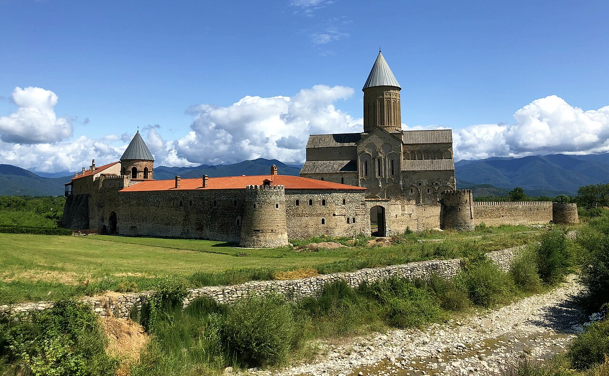
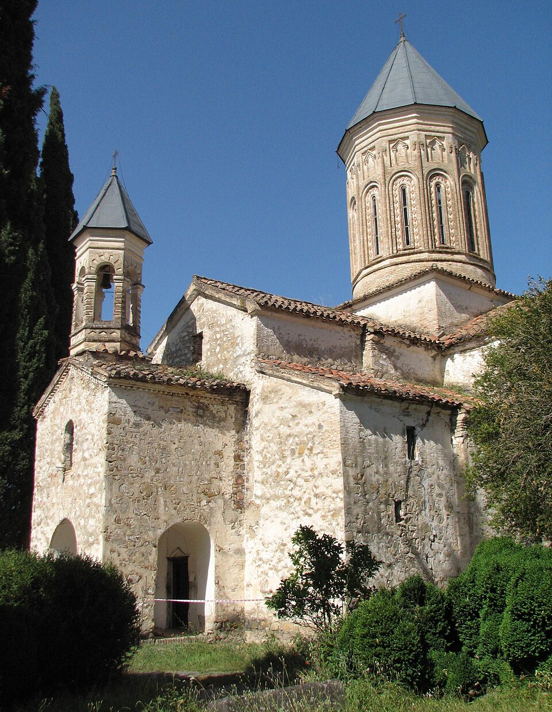
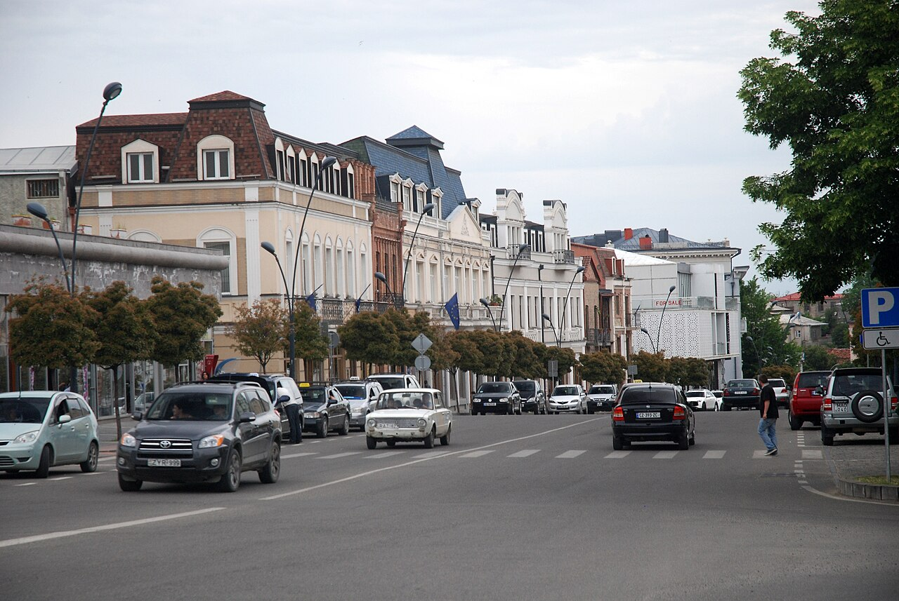
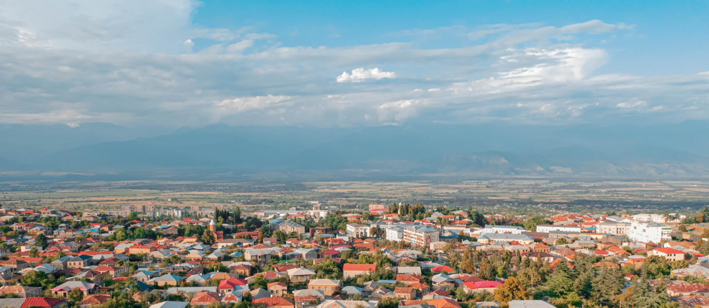

☕ Long breakfast at Chubini
The winery's family table
House cheese, walnut spread, garden tomatoes, bread from the tone oven. Take your time — today's drive is short.

A gentle Sunday in the wine country — the 11th-century cathedral at Alaverdi, the academy ruins where Shota Rustaveli once studied, a long family-table lunch at a small winery in Napareuli, and an old town to wander as the sun goes behind the mountains.
House cheese, walnut spread, garden tomatoes, bread from the tone oven. Take your time — today's drive is short.
Saying goodbye is the harder part — Tornike will likely send you off with a bottle. Drive 30 km southwest through vines and orchards.
One of Georgia's largest cathedrals — a 50-metre dome, 11th century, a working monastery still. The monks here have been making qvevri wine for a thousand years; in the garden you can see the buried clay vessels. Inside, the frescoes are faded but the scale of the nave still stops you.
The ruined 12th-century academy where Shota Rustaveli, Georgia's national poet, is said to have studied. Cypresses, broken arches, three small churches in a clearing. Quieter and stranger than Alaverdi — bring your imagination.

The "one good winery beyond Chubini" — Twins is family-owned, genuinely educational, and the lunch on the back patio is the kind of long mid-afternoon meal you remember a year later. Mtsvadi over the coals, bread pulled from the tone oven in front of you, qvevri rkatsiteli to drink. Book ahead.
Drop bags at the hotel, then wander into town: Erekle II Square, the 900-year-old plane tree (it really is that old), the small bazaar, and the wooden-balconied courtyards around the cultural centre. Quietly charming.

Small hilltop park with a statue of King Erekle II and a view over the Alazani plain to the Caucasus. The light here at golden hour is something to slow down for.
Local favourite for proper Kakhetian cooking — chakapuli (lamb in tarragon and green plums) is the dish in season. Togonidze's family marani in Shalauri (10 min drive) is the alternative if you want a quieter cellar dinner.
The hotel has a small outdoor pool and a quiet garden — last drink under the vines if the night is warm.
